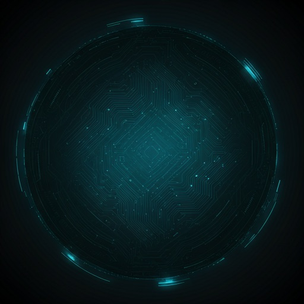

NEURAL
UPLINK
ESTABLISHED
Direct cerebral interface activated. Bypass all conventional security protocols and synchronize with the global mainframe. The digital frontier is yours to command.
SYSTEM_CAPABILITIES
Neural Overlay
Enhanced sensory perception layers that map real-time data onto your visual field. Experience 10ms latency updates across 10,000 parallel streams.
- check_circle Retinal Projection Tech
- check_circle Haptic Feedback Loop
- check_circle Bio-Sync Integration

Quantum Shell
Infinite cryptographic redundancy. Your data is fragmented across 4,000 sub-nodes, making extraction impossible for non-authorized entities.
Sync Protocol
> TARGET_ADDR: 0x88F1-44B2-99XA
> BYPASSING_QUANTUM_FIREWALL...
> HANDSHAKE_SUCCESSFUL.
> MAPPING_NEURAL_DENSITY: 98.44%
> SCANNING_MEMORY_SECTORS...
> RUNNING_BIO_DIAGNOSTICS...
> STATUS: ALL_SYSTEMS_OPTIMAL.
> STABILIZING_LINK_CHANNELS...
> DATA_STREAM_OPEN.
Unified communication between biological and synthetic components. Zero-latency feedback for seamless operation across planetary distances.